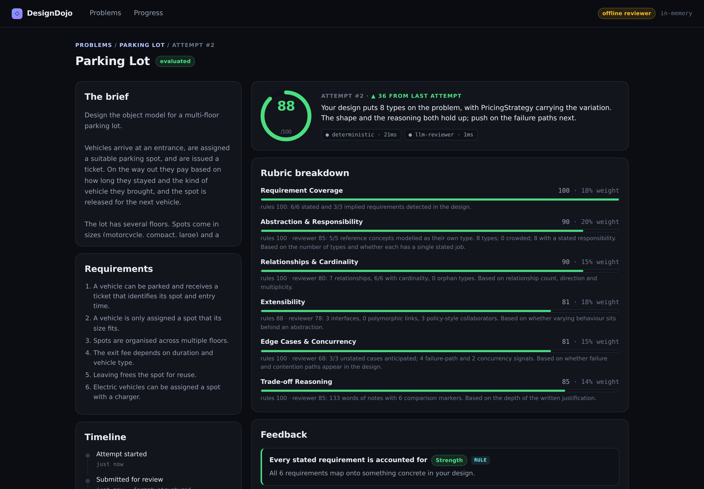
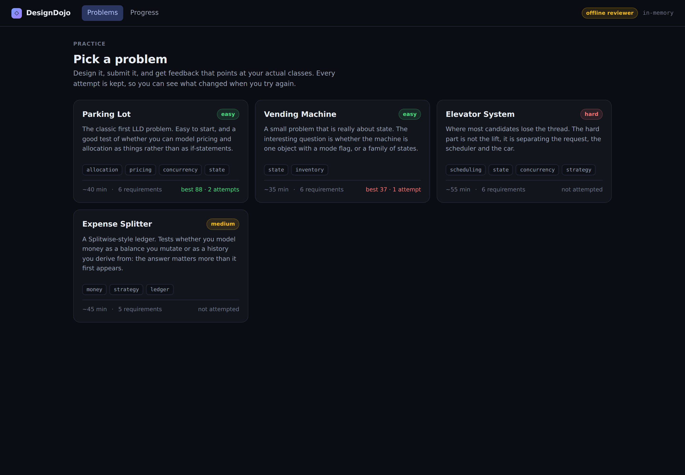
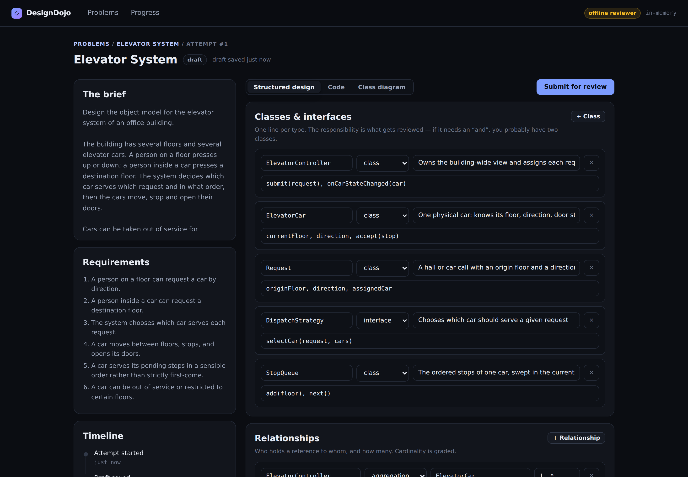
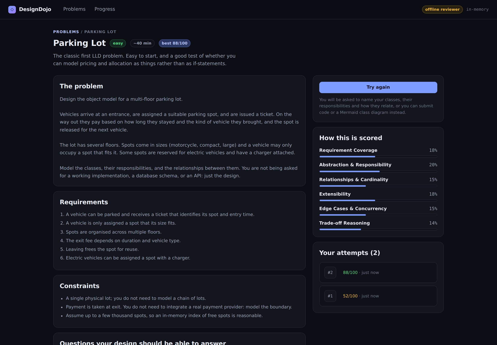
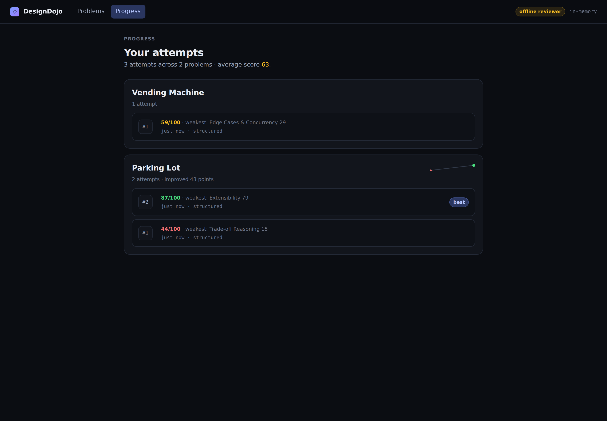

Engineering assignment submission
Pranjal Sharma
This pack contains the research note, the design note, the README and the AI usage note. The working prototype and its tests are in the repository.
What the learner problem actually is, what already exists, where the gaps are, and the product direction that follows.
LLD practice has an unusual shape: it is easy to start and almost impossible to self-assess.
A learner can read "design a parking lot", spend forty minutes producing a class diagram, and come away with no idea whether it was any good. Three properties of the domain cause this:
There is no single correct answer. Unlike a DSA problem, where a test suite settles it, a parking lot can put pricing in a PricingStrategy, a RateCard, or on Ticket itself and be defensible in all three. So the obvious feedback mechanism, compare against a reference solution, is actively wrong. It teaches conformity to one author's taste and punishes good designs that differ.
The mistakes are invisible from the inside. The errors that matter are structural: a class doing two jobs, cardinality that cannot express a real case, a switch statement that will be reopened for every new requirement. A learner who makes one of these does not experience an error. Their design looks finished to them. This is precisely the gap a reviewer closes and self-study cannot.
The graded artefact is partly an argument, not an artefact. In a real interview, roughly half the signal is the reasoning: why this shape and not the other one, what does your choice make harder. A learner practising alone produces the diagram and skips the argument entirely, because nothing forces it out of them.
The consequence is a plateau. Learners solve Parking Lot, Elevator and Vending Machine, feel no more confident than before, and conclude LLD is a thing you either have a knack for or do not.
| Approach | What it does well | Where it leaves the learner |
|---|---|---|
Blog posts & GitHub repos (low-level-design-primer, awesome-lld lists) |
Free, plentiful, often genuinely good reference solutions. | Purely read-only. You compare your answer to theirs and see a difference, with no way to know whether the difference matters. No practice loop at all. |
| Books & courses (Head First Design Patterns, Grokking the OOD Interview) | Excellent at teaching the vocabulary: patterns, SOLID, when to use which. | Worked examples, not exercises. The reader is never asked to produce a design that is then examined. Knowledge without a feedback signal. |
| DSA platforms (LeetCode, HackerRank) | The loop is perfect: attempt → automatic verdict → retry, with history. | The verdict comes from test execution, which LLD has no equivalent of. Their LLD-adjacent content is multiple-choice or "here's the answer, compare yourself". |
| Mock interview marketplaces (Pramp, interviewing.io) | The highest-quality feedback available: a human who probes the reasoning. | Expensive, scheduled, and roughly one problem per session. Practising a design five times to see it improve is not economically possible. |
| General-purpose LLMs (paste your design into ChatGPT) | Free, instant, surprisingly perceptive on structure. | Three failure modes seen consistently in testing: it is agreeable, praising weak designs; it drifts, giving different verdicts for the same input; and it grades against whatever reference solution it happens to recall, marking down unconventional-but-sound answers. It also never says "you did not mention pricing at all" reliably, because it has no fixed checklist. |
Gap 1: Nothing closes the loop. Reading material is read-only; mock interviews do not repeat cheaply. Nobody offers attempt → feedback → attempt again → see the difference for LLD, which is exactly the loop that made DSA practice work.
Gap 2: Feedback is either rigorous or scalable, never both. A human reviewer is rigorous and does not scale. A raw LLM scales and is not rigorous; it will not reliably notice a missing requirement, and it varies run to run.
Gap 3: Learners are not made to state the parts that get graded. A blank text box lets someone write three fluent paragraphs while never naming a class's responsibility or a relationship's cardinality. The submission format itself is a teaching tool that everyone leaves on the table.
Gap 4: Nothing distinguishes a fact from an opinion. When an LLM says "your Vehicle class violates SRP", the learner cannot tell whether that is checkable or a guess, so they either accept everything or trust nothing.
DesignDojo: a repeatable practice loop for LLD, with feedback that shows its work.
Four positions follow directly from the gaps above.
1. The submission is structured, not prose. The learner names their classes, writes one line of responsibility for each, and states relationships with cardinality. This is the product's main teaching device: it makes the skipped decisions unskippable, and it happens to give the evaluator something precise to read. Code and Mermaid class diagrams are accepted too, for learners who think in those, all three normalise to the same internal model. (Gap 3.)
2. Evaluation is deliberately split in two. Checkable things (is each stated requirement addressed, is any class carrying twelve members, is cardinality stated, does the design mention what happens when the lot is full) are decided by reproducible rules. Judgement calls (is this abstraction well chosen, does the reasoning hold) go to a language model, which is given the rule findings and told not to duplicate them. The rubric decides per dimension how much each source is trusted. (Gap 2.)
3. Every finding is labelled with its source, on screen. A learner can see that "nothing owns pricing" came from a rule that will show its matched evidence, while "Vehicle is doing two jobs" is a reviewer's opinion they are free to argue with. Requirement coverage displays the learner's own words that matched, so a wrong verdict is arguable rather than authoritative. (Gap 4.)
4. Attempts are never overwritten. Every attempt is kept, numbered, and charted. The product's core screen is not the score; it is the second attempt scoring higher than the first on the dimension the learner was told to fix. (Gap 1.)
Accounts and auth (a per-browser learner id is enough to make history real), a problem-authoring UI (problems are seeded data: a mentor could add one without an engineer, which is the point), social or leaderboard features (they reward score-chasing over the retry loop), and rendered diagram editing (Mermaid text diffs between attempts; a canvas does not).
The metric that matters is score improvement between attempt 1 and attempt 2 on the same problem: the loop either works or it does not. Secondary: what share of learners submit a second attempt at all, and whether the dimension a learner was told to fix is the one that moves.
The MVP, the user flow, the classes that carry the domain, how evaluation works, and what was traded away.
A learner picks a problem from a seeded catalogue, works on a design in one of three formats, and submits it. Submission returns immediately with the attempt queued; a background worker normalises the submission into a common design model, runs it through an evaluation pipeline (deterministic rules always, a language model when available), and stores a scored review. The client polls until the attempt leaves a pending state, then shows the score per rubric dimension, the feedback with each item labelled by its source, and requirement-by-requirement coverage with the matched evidence. Every attempt is kept, so the history view charts score across attempts per problem.
Catalogue ──▶ Problem brief ──▶ Workspace ──▶ Submit ──▶ Review ──┬──▶ Try again ──▶ (new attempt)
▲ │
└── autosaved draft └──▶ Progress (all attempts, charted)
The states behind it are the attempt's own, not a spinner:
draft ──submit──▶ queued ──worker picks up──▶ evaluating ──▶ evaluated (terminal)
▲ │
└────── retryable, runs left ┘
│ │
│ runs exhausted
│ ▼
└────── learner re-runs ── failed
Three aggregates, one of them doing most of the work.
Problem: authored content, immutableCarries the learner-facing brief and the grading key: requirements (each with signals, the synonym set that counts as addressing it), expectedConcepts (with aliases and a why), pitfalls (problem-specific traps with trigger terms), and a Rubric. The DTO layer strips the key before it reaches the client.
The design decision here is that a problem is data, not code. Adding "Design a Chess Game" is a new entry in seedProblems(): the deterministic checker picks up its signals, concepts and pitfalls with no new classes. Problem authoring is a content task.
Rubric: six fixed dimensions, per-problem weightsrequirement_coverage, abstraction_quality, relationships, extensibility, edge_cases, tradeoff_reasoning.
The axes are fixed deliberately: a learner comparing attempt #1 to attempt #4 needs them to mean the same thing every time. Problems tune the weights (Elevator leans on relationships and trade-offs; Vending Machine on edge cases).
Each dimension also carries a deterministicShare ∈ [0,1]: how much of that dimension's score comes from rules versus the model. This one number is where the platform's whole evaluation philosophy lives, expressed as data rather than as branching inside the evaluator:
| Dimension | Deterministic share | Why |
|---|---|---|
| Requirement coverage | 0.7 | A finite authored checklist. Mostly a fact. |
| Relationships | 0.5 | Cardinality present/absent is a fact; whether it is right is judgement. |
| Edge cases | 0.4 | Vocabulary is detectable; sufficiency is not. |
| Abstraction quality | 0.3 | Crowded classes are detectable; good taste is not. |
| Extensibility | 0.3 | Seams are detectable; whether they are the right seams is not. |
| Trade-off reasoning | 0.0 | Only a reader can judge an argument. |
Attempt: the aggregate root of the practice loopOwns its status, its submission, its evaluation, its event timeline and its run count. Every state change goes through a method on this class, and every method consults a single transition table (AttemptStatus.ts). Nothing outside the class assigns to status, so "can an evaluated attempt be resubmitted?" has exactly one answer in exactly one file.
Two behaviours worth calling out:
submit() validates before it transitions. A submission too thin to be worth evaluating leaves the attempt untouched and still editable: nothing the learner typed is lost. (This ordering was a real bug, caught by a test; see AI_USAGE.md.)failEvaluation(reason, retryable) decides between re-queueing and giving up, based on the retryability of the error and the runs remaining. The attempt, not the worker, owns its own retry budget.Submission: a discriminated union, not a hierarchyStructuredSubmission | CodeSubmission | DiagramSubmission. Inert data that crosses the wire and the database; behaviour lives in the normalisers that read it.
The product opinion in the MVP is that the structured format is primary. Free prose is pleasant to write, impossible to give precise feedback on, and lets a learner skip naming responsibilities and cardinality: the very things being taught. Code and diagram exist for learners who think in them.
Submission ──▶ SubmissionNormalizer ──▶ DesignModel ──▶ EvaluationPipeline ──▶ Evaluation
(3 formats) (Strategy, 1/format) (the IR) │
├─ DeterministicEvaluator ← 8 DesignChecks
└─ LlmEvaluator (optional) ← LlmClient
│
ScoreAggregator
(blends by deterministicShare)
DesignModel: the intermediate representationEntities, relationships, operations, narrative, plus a flattened lower-case searchText for signal matching. Evaluators depend on this and never on the raw submission. That is what makes the format axis and the evaluator axis independent: a new format is one normaliser and zero evaluator changes; a new evaluator works across all three formats for free.
DesignCheck: the deterministic halfEight small, independent, synchronous rules: requirement coverage, concept coverage, responsibility distribution, relationship clarity, extensibility seams, edge-case awareness, trade-off articulation, known pitfalls. Each returns a score for one dimension, a rationale, and feedback items.
Handling "more than one valid answer" is a matter of wording and of floors. ConceptCoverageCheck never says a concept is missing, it says nothing was detected that owns it, and asks whether that was deliberate. It has a score floor, so disagreeing with the reference costs some marks and never all of them. Requirement coverage, where there genuinely is a right answer, has no such floor.
Three refinements came out of running hand-written designs through the platform and finding the verdicts unconvincing:
Concepts are scored three ways, not two. A concept can be dedicated (a type is named for it: full credit), folded (it appears only inside another type's members, e.g. calculateFee() on a god class, half credit and a question), or absent (no credit). Grading folded the same as dedicated let a design that merely name-drops score as well as one that models the concept; grading it the same as absent would assert that the reference decomposition is the only correct one. Half credit says what is actually true, the concept is present, but its ownership is unclear from the design alone.
Edge-case awareness is scored from the problem's own implied requirements, not a global word list. Every problem authors the cases the brief deliberately omits (a full lot, two cars racing for the last spot, an equal split of 100 across three people) each with tuned signals. Those are a far sharper instrument than generic failure vocabulary, and they reward noticing the case rather than using a particular word. The generic vocabulary stays as a smaller secondary signal, since a design can be thoughtful in ways the problem's author did not anticipate. Reading the implied requirements here as well as in RequirementCoverageCheck is deliberate rather than double counting: that check asks did you cover the brief, this one asks did you think past it.
A check that finds nothing abstains rather than scoring 100. PitfallCheck returns no score at all when a design walks into none of the known traps. Not falling into a handful of named pitfalls is the absence of evidence, not evidence of good abstraction, and scoring it as a perfect result quietly lifted every design's abstraction average for doing nothing.
This half is the platform's floor: dependency-free, single-digit milliseconds, and reproducible. Whatever happens to the model, a learner who submits gets a real score with real evidence.
LlmEvaluator: the qualitative halfJudges only the five dimensions where taste is required, and is given the deterministic findings in its prompt and told not to repeat them, so the two halves compose into one review rather than two overlapping ones. Output is strict JSON validated by a Zod schema; the parser scans for the first brace-balanced object (ignoring braces inside strings) because models wrap JSON in prose. Temperature 0.1: the same design resubmitted should get the same review, or the score history means nothing.
Three prompt rules exist because of observed behaviour without them: without "there is more than one correct design" it graded by similarity to the reference; without "quote something specific from their submission" it produced fluent generic advice; without "do not comment on requirement coverage" it duplicated and sometimes contradicted the rules.
ScoreAggregatorBlends per dimension by deterministicShare; falls back to whichever source reported when one is missing; renormalises the overall score over the dimensions actually assessed, so a degraded run is not silently scored out of a different total.
Three levels, and at no level is the learner's submission lost or the error swallowed:
degraded: true with the reason, and the UI shows a "Partial review" banner with a re-run button. The learner gets a genuinely useful review, clearly marked as half of one.failed with the reason kept and the submission intact; the learner re-runs it from the UI with a fresh budget.Evaluation runs off a JobQueue<T> interface with an in-process implementation. It is honest about being in-process: a restart loses queued jobs, leaving the attempt in queued for a re-run. That is an acceptable trade when the submission itself is already durable, and a durable broker is a dependency this MVP has not earned.
| Change | What you write | What you do not touch |
|---|---|---|
| A new submission format (image + OCR, repo link, JSON export) | One SubmissionNormalizer, registered in the container |
Any evaluator, service, route, or the aggregator |
| A new evaluation approach (a static analyser over submitted code, a peer-review queue, a second model voting) | One Evaluator, added to the pipeline's optional list |
The pipeline, the worker, the attempt lifecycle |
| A new problem | One entry in seedProblems(): signals, concepts, pitfalls, weights |
No code at all |
| A real queue / database / model provider | One adapter behind JobQueue, AttemptRepository, LlmClient |
One line each in container.ts |
The composition root (container.ts) is the only file in the codebase that names a concrete adapter. Everything else takes its collaborators through its constructor.
Structured submission as the primary format. Cost: more friction than a text box, and it nudges toward a conventional shape. Why anyway: the friction is the teaching. A learner who has to write one line of responsibility per class discovers the overloaded class themselves, which is the lesson.
Signal matching rather than parsing meaning. Requirement coverage is keyword-set matching over the design text. Cost: it can be gamed by name-dropping, and it can miss a design that solves a requirement in unusual vocabulary. Why anyway: it is instant, free, reproducible, and it can show its evidence, which is what makes it arguable rather than authoritative. The model covers what it misses, and the UI shows exactly what matched so a false verdict is visible.
Regex-based code parsing rather than a real AST. Cost: it will misread exotic syntax. Why anyway: the evaluators need shape, not precision, and the model reads the raw source anyway. Three language parsers is a week of work for a sharper answer to a question already half-answered. CodeNormalizer is the single class to replace if code becomes the popular format.
In-process queue. Cost: jobs do not survive a restart. Why anyway: the assignment explicitly warns against turning this into a distributed-systems project, the submission is durable, and the interface means the upgrade is an adapter.
Attempts are immutable once submitted. Cost: a typo means starting a new attempt. Why anyway: the history is the product. An editable attempt makes "did I improve?" unanswerable.
No accounts. Cost: clearing browser storage loses your history. Why anyway: auth is orthogonal to everything being evaluated here, and the learner identity is isolated in one function on each side, so adding it is a small, contained change.
Kept brief, per the brief's scope boundary. The two constrained resources are model latency/cost and evaluation throughput: nothing else in this system is heavy.
InProcessJobQueue for BullMQ (Redis) or a Kafka topic and run the worker as a separate process. No domain code changes; the attempt lifecycle already assumes evaluation is asynchronous and can fail.Practise Low-Level Design the way you practise algorithms: pick a problem, submit a design, get feedback that points at your actual classes, and try again with the last review still in view.
Built for the CipherSchools 2-day engineering assignment.
| Research note | docs/RESEARCH.md: the learner problem, what exists, the gaps, and the product direction |
| Design note | docs/DESIGN.md: MVP, flow, classes, evaluation approach, trade-offs |
| AI usage | AI_USAGE.md: five decisions where AI changed the outcome, including the ones I rejected |
Requires Node 20+. No database and no API key needed.
npm install
npm run dev
That is the whole setup. With no MONGODB_URI the platform stores attempts in memory, and with no ANTHROPIC_API_KEY it uses an offline stand-in reviewer, labelled as such in the UI, so the full loop works on a fresh clone.
cp .env.example .env
# add ANTHROPIC_API_KEY=sk-ant-...
npm run dev
The header badge switches from offline reviewer to the model id. To persist attempts, add MONGODB_URI=mongodb://localhost:27017/lld-practice; the badge then reads mongodb.
npm test # 85 tests
npm run typecheck

Choose → design → submit → review → try again.
 |
 |
| Catalogue: four problems, your best score on each | Workspace: the brief beside the design, autosaved |
 |
 |
| Brief: requirements, constraints, and how it is scored | Progress: every attempt kept and charted |
There is more than one correct design for a parking lot, so grading against a reference solution would be actively wrong. Three things fall out of taking that seriously.
Checkable things are decided by reproducible rules; judgement calls go to a language model. The rubric declares the blend per dimension:
| Dimension | Rules | Model | Why |
|---|---|---|---|
| Requirement Coverage | 70% | 30% | A finite authored checklist: mostly a fact |
| Relationships & Cardinality | 50% | 50% | Presence is a fact; correctness is judgement |
| Edge Cases & Concurrency | 40% | 60% | Vocabulary is detectable; sufficiency is not |
| Abstraction & Responsibility | 30% | 70% | Crowded classes are detectable; good taste is not |
| Extensibility | 30% | 70% | Seams are detectable; the right seams are not |
| Trade-off Reasoning | 0% | 100% | Only a reader can judge an argument |
The deterministic half is the platform's floor: dependency-free, single-digit milliseconds, identical every run. The model is given the rule findings and told not to repeat them, so the two compose into one review.
Each item is tagged rule or reviewer on screen. Requirement coverage shows the learner's own words that matched. A verdict you disagree with is something you can argue with, not something handed down, which matters a lot when the model is occasionally wrong.
No check says a concept is missing. It says nothing was detected that owns it, and asks whether that was deliberate, with a score floor, so departing from the reference costs some marks and never all of them.
Concepts are graded three ways rather than two: dedicated (a type is named for it), folded (it exists only as a method on another class, half credit and a question), or absent. Full credit for folding it in would let name-dropping score as well as modelling; no credit would assert that one decomposition is the only right one.
Evaluation is asynchronous, so submitting returns immediately with the attempt queued and the client polls. Three levels of failure handling, and at none of them is the learner's work lost:
degraded with the reason, and the UI shows a partial-review banner with a re-run button.failed with the reason kept and the submission intact; the learner re-runs it with a fresh budget.web/ React + Vite, no UI framework
server/src/
domain/ ← no imports from anything below this line
problem/ Problem, Rubric (dimensions + deterministic share)
attempt/ Attempt aggregate, state machine, Submission union, DesignModel
evaluation/ Evaluation value objects
evaluation/
normalizers/ Structured | Code | Diagram → DesignModel (Strategy)
deterministic/checks/ 8 independent DesignChecks
llm/ LlmClient (Anthropic | offline), prompt, schema-validated parse
EvaluationPipeline.ts composes evaluators, degrades gracefully
ScoreAggregator.ts blends by the rubric's deterministic share
application/ AttemptService, EvaluationWorker, JobQueue port
infrastructure/ repositories (in-memory | Mongo), HTTP, seeded problems
container.ts the only file that names a concrete adapter
Dependencies point inward. The domain imports nothing from infrastructure, which is what lets the whole suite run against in-memory adapters in about a second.
| To add... | You write | You do not touch |
|---|---|---|
| A submission format | one SubmissionNormalizer |
any evaluator, service or route |
| An evaluation approach | one Evaluator |
the pipeline, worker or lifecycle |
| A problem | one entry in seedProblems() |
no code at all |
| A real queue / DB / model provider | one adapter | one line in container.ts |
All routes are under /api. The learner is identified by an x-learner-id header (see Limitations).
| Method | Route | Purpose |
|---|---|---|
GET |
/health |
Storage and reviewer actually in use, queue depth |
GET |
/problems |
Catalogue |
GET |
/problems/:idOrSlug |
Brief, requirements, constraints, rubric weights |
POST |
/attempts |
Start an attempt ({ problemId }) |
PUT |
/attempts/:id/draft |
Autosave |
POST |
/attempts/:id/submit |
Submit; returns immediately as queued |
GET |
/attempts/:id |
Poll for status and the evaluation |
POST |
/attempts/:id/reevaluate |
Re-run a failed evaluation |
GET |
/attempts?problemId= |
History |
The grading key (requirement signals, reference concepts, pitfalls) never leaves the server; there is a test asserting it.
85 tests, ~1.5s, no external services.
| File | Covers |
|---|---|
attempt-lifecycle.test.ts |
State machine: happy path, illegal transitions, retry budget, and that a rejected submission leaves the attempt editable |
evaluation-pipeline.test.ts |
Strong vs weak scoring separation, that the weak design is blamed for the right dimensions, reproducibility, the rule/model blend, and four degradation paths (model down, prose instead of JSON, wrong schema, fenced JSON) |
evaluation-worker.test.ts |
Retry with backoff, exhausting the budget into failed, learner-triggered re-run, redelivered jobs, previous-score context |
normalizers.test.ts |
TypeScript / Java / Python parsing, Mermaid arrow direction and cardinality, unparseable input, unregistered format |
scoring.test.ts |
Rubric normalisation and validation, blending, renormalising over assessed dimensions, clamping, JSON extraction edge cases |
api.test.ts |
End-to-end loop, repeat attempts showing improvement, cross-learner isolation, 422/409/404 paths, running with no reviewer at all |
problem-catalogue.test.ts |
Every seeded problem is completely authored, its rubric covers all six dimensions, its signals are actually matchable, and it separates a strong design from a generic one: a guard that covers each problem added later with no new fixture |
signal-matching.test.ts |
Word-boundary and inflection rules, camelCase/snake_case identifier splitting, and that a dedicated type scores above the same concept folded into a god class |
Honest about what this MVP is not:
localStorage; clearing it loses your history. Isolated to one function on each side.queued for a re-run. The JobQueue interface is the upgrade path.I used Claude (via Claude Code) as a pair programmer on this build. The working loop was the same every time: I decided what the thing needed to do, the AI argued a position and drafted faster than I type, and nothing stayed in the repo until I had read it and a test had run against it.
That loop is why this document is mostly about disagreements. The AI is a useful second opinion precisely because it will confidently propose something reasonable-but-wrong, and the value is in catching which is which. Below are the five exchanges that actually changed the outcome, including the three where I went the other way.
Suggested. The first architecture I was offered was the obvious one: normalise the submission, send everything to the model with a rubric in the prompt, parse a score back. Simple, and it covers every dimension in one call.
I rejected it, and this became the central design decision instead.
Two reasons, both from actually testing the behaviour. First, it is unreliable at the checkable things. Asked "does this design address the six stated requirements", the model missed a genuinely-absent requirement on some runs and hallucinated coverage on others, while a keyword-set match over the design text answers that exactly, instantly, and for free. Second, it is not reproducible. Resubmitting the same design produced scores several points apart. A platform whose entire premise is "attempt 2 scored higher than attempt 1" cannot have that much noise in its instrument.
What I built instead. A two-part pipeline where the rubric declares a per-dimension deterministicShare: requirement coverage is 70% rules, trade-off reasoning is 100% model. The deterministic half is the floor: dependency-free, milliseconds, reproducible, and able to show its evidence. The model handles what only a reader can judge.
The knock-on benefit is the one I did not anticipate: because the deterministic half cannot really fail, a model outage degrades the review instead of breaking it. That fell out of the split rather than being designed for.
Suggested. When I asked how to give feedback when several designs are valid, the answer was to prompt the model with "there is no single correct solution; judge on internal consistency". Correct as far as it goes, and it is in the system prompt.
Where it was incomplete. It only addressed the model. My deterministic checks had exactly the same bias baked in, and worse, because rules are absolute: ConceptCoverageCheck compares against a reference concept list, so a learner who deliberately folded pricing into Ticket would be marked down by a rule with no room to disagree. The AI did not flag this, presumably because I had asked about the prompt.
What I changed. Two things, both in the deterministic half:
ConceptCoverageCheck floors at 40, so departing from the reference costs some marks and never all of them. RequirementCoverageCheck, where there genuinely is a right answer, has no floor.And the reason I trust it now: every finding is labelled with its source in the UI, and requirement coverage shows the learner's own matched words. A verdict the learner disagrees with is arguable rather than authoritative.
I asked for edge-case tests around the attempt lifecycle rather than writing only the happy paths myself. One asserted something I had not thought about: after a submission is rejected for being too thin, what state is the attempt in?
It failed. My submit() was:
this.transitionTo('queued'); // ← state already changed
assertSubmittable(submission); // ← then throws
The transition happened before validation, so a learner whose submission was rejected would have found their attempt stuck in queued: uneditable, with nothing queued, and their work effectively frozen. Reversed to validate first, so a rejected submission leaves the attempt exactly as it was. The test is attempt-lifecycle.test.ts › rejects a submission too thin to be worth evaluating, and it asserts the attempt is still draft afterwards.
This is the clearest value I got from AI on this project: not the code, the questions. I would have tested that submitting invalid input throws. I would not have tested what it leaves behind.
The reviewer system prompt was written iteratively against real outputs, not in one pass. Three of its five rules were added to fix specific failure modes:
| Behaviour without the rule | Rule added |
|---|---|
| Graded by resemblance to the reference concepts, marking down unconventional but sound designs | "Judge the design on its own internal logic... never on how closely it resembles a reference solution." |
| Produced fluent, generic advice that could have been written without reading the submission | "Every point must quote or name something specific from their submission. If you cannot point at their words, do not make the point." |
| Re-checked requirement coverage, duplicating the rules and occasionally contradicting them | "Do not comment on whether the stated requirements are covered... its findings are given to you below. Do not repeat or contradict them." |
Two more settings came from the same testing: temperature 0.1, because two identical designs getting different verdicts destroys the progress history the product is built on; and passing the deterministic findings into the prompt, which is what turns two evaluators into one coherent review.
I also rejected the suggestion to describe scoring as "against a perfect design". It produced uniformly harsh scores, which is demotivating and inaccurate for a 45-minute exercise. The prompt now says "against what a strong candidate would produce in a 45-minute interview... 50 is an average attempt."
Suggested. For multi-format support, one evaluator per format: StructuredEvaluator, CodeEvaluator, DiagramEvaluator.
Why I changed it. That multiplies: n formats × m evaluators, and every new rule has to be written three times and kept consistent. I inverted it: normalise all three formats into one DesignModel, and let every evaluator read only that. Formats and evaluators become independent axes: a new format is one normaliser and zero evaluator changes; a new evaluator works across all formats immediately.
The suggestion was reasonable and would have worked for three formats. It just would not have survived the fourth.
Nothing went in on the strength of looking right. Four things in this repo exist because the verification step caught something:
submit() ordering bug. A lifecycle test asserted what state an attempt is left in after a submission is rejected. It failed: the transition to queued ran before validation, so a learner whose submission was too thin would have found their work frozen in a state they could not edit. Fixed by validating first.[, , generic, arrayOf, plain] into [, generic, arrayOf, plain] in CodeNormalizer. Nothing looked wrong; two tests went red immediately and named it.calculateFee() scored as well as modelling a PricingStrategy; the pitfall check returned 100 when it found nothing, quietly lifting every abstraction score; and edge-case detection used a global word list that missed designs handling the cases in their own vocabulary. All three are now fixed, and §2 below is the philosophy that came out of it.I pointed, reviewed and corrected; the AI drafted. It was quickest on work where the shape was already settled: the Express/Vite/Vitest scaffolding, the repetitive DTO and Zod schema mapping, the CSS design system, and the Mermaid arrow-parsing table, which is fiddly and exactly the kind of thing a model gets right faster than a person does.
None of it landed unedited. The generated requirement signal lists were the clearest case: the synonym sets were too narrow and missed naming a real learner would reach for, like RateCard for pricing, so I rewrote them and then added the problem-catalogue test suite to stop the same narrowness creeping into any problem added later.
Three calls carry this project, and no amount of drafting speed would have produced them:
deterministicShare is the whole design in one number: requirement coverage is 70% rules because it is a checklist, trade-off reasoning is 100% model because only a reader can judge an argument.I used the AI to attack all three after the fact, which is where §2 and §3 came from. It is a good adversary and a poor author: it will tell you a design is fine, and it will also find the hole in it if you ask it to try.